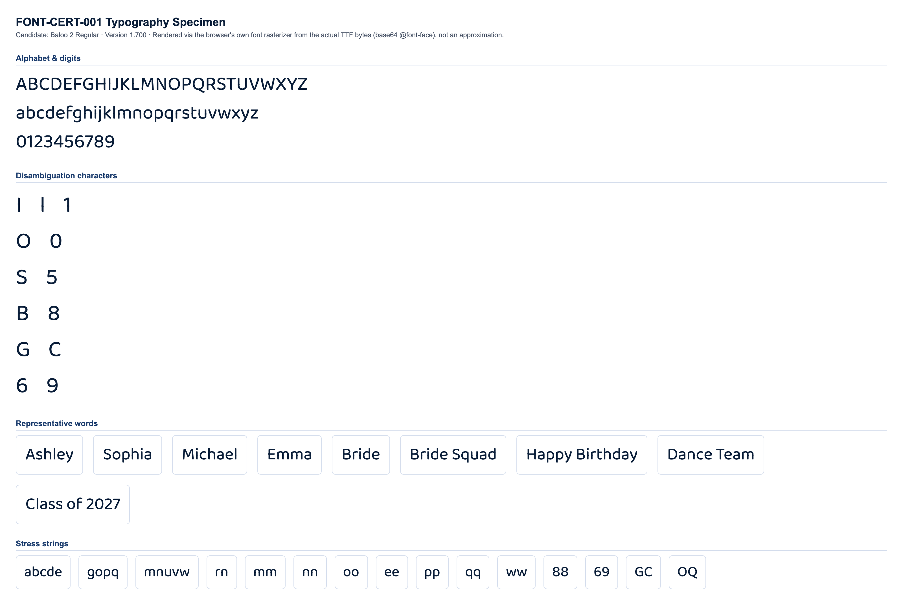

CONDITIONAL PASS
Classification and the feedback below are computed at the mid-range letter height for each stone size (the representative case). Full min/mid/max data is shown in section 4.
No blocking issues found.
Min and max height produce no more collisions or low-stone-count findings than mid height.
Medium
No blocking production failures, but 16 refinement note(s) were found (13 actionable item(s) below) -- readability, spacing, or anatomy concerns that would need addressing for production quality.
| Status | Check | Category | Detail |
|---|---|---|---|
| PASS | Successful TTF parsing | parsing | opentype.js parsed the file without error. |
| PASS | Outline format | structure | TrueType (quadratic) outlines. sfnt signature "0x00010000", opentype.js outlinesFormat="truetype". |
| PASS | Quadratic TrueType outlines | structure | TrueType file with quadratic curves confirmed: 217 curve commands found across 10 sampled glyphs. |
| PASS | unitsPerEm | structure | unitsPerEm = 1000 |
| PASS | Glyph count | structure | 1601 glyphs (font.numGlyphs=1601). |
| PASS | .notdef at glyph index 0 | structure | .notdef confirmed at glyph index 0. |
| PASS | Unicode cmap coverage | coverage | cmap maps 856 Unicode code point(s) to glyphs. |
| PASS | Required character coverage (A-Z, a-z, 0-9, space, . , ' - ! ?) | coverage | All 69 required characters map to a real glyph (glyph index != 0). |
| PASS | Required sfnt tables | structure | All required tables present: cmap, glyf, head, hhea, hmtx, loca, maxp, name, post, OS/2. |
| PASS | Family / subfamily / version / PostScript naming | naming | family="Baloo 2", subfamily="Regular", version="Version 1.700", postScriptName="Baloo2-Regular". |
| PASS | Ascender, descender, line gap, horizontal metrics | metrics | ascender=1078, descender=-524, hhea.lineGap=0, advanceWidthMax=2076, numberOfHMetrics=1601 (hmtx table present: true). |
| PASS | Invalid or empty glyphs | geometry | No mapped, non-whitespace, non-invisible-by-design character resolves to an empty outline. |
| PASS | Open contours | geometry | Every required-character contour closes explicitly (an explicit "Z"/closepath command) or implicitly (its final point returns to its starting point). |
| WARNING | Self-intersections | geometry | 32 of 69 character(s) show 116 total crossing(s) (small counts: 1-4 per affected character) -- "A" (self:0, cross-contour:4), "B" (self:2, cross-contour:4), "E" (self:0, cross-contour:6), "F" (self:0, cross-contour:6), "H" (self:0, cross-contour:8), "K" (self:0, cross-contour:11), "L" (self:0, cross-contour:1), "N" (self:0, cross-contour:2), "P" (self:0, cross-contour:1), "Q" (self:0, cross-contour:2), "R" (self:0, cross-contour:3), "T" (self:0, cross-contour:4), "X" (self:0, cross-contour:4), "Y" (self:0, cross-contour:2), "Z" (self:0, cross-contour:2), "b" (self:2, cross-contour:2), "d" (self:2, cross-contour:2), "e" (self:2, cross-contour:0), "f" (self:0, cross-contour:5), "g" (self:2, cross-contour:2), "h" (self:0, cross-contour:2), "k" (self:0, cross-contour:10), "m" (self:0, cross-contour:1), "p" (self:2, cross-contour:2), "q" (self:2, cross-contour:2), "t" (self:0, cross-contour:2), "x" (self:0, cross-contour:4), "z" (self:0, cross-contour:2), "5" (self:0, cross-contour:1), "6" (self:1, cross-contour:0), "8" (self:1, cross-contour:2), "9" (self:1, cross-contour:0). Not production-blocking on its own (verify visually against rhinestone-specimen.png/typography-specimen.png -- a transversal crossing in the outline does not necessarily produce a visible defect once converted to stones). |
| WARNING | Zero-length or duplicate outline segments | geometry | 68 of 69 character(s) contain 700 raw zero-length draw command(s) total (a command whose endpoint exactly duplicates the current pen position -- draws nothing, harmless no-op, but real source-file redundancy), 0 duplicate outline segments. Not production-blocking: these commands have no visual or geometric effect. Per-character counts: "A" (zero-length:12, duplicate:0), "B" (zero-length:14, duplicate:0), "C" (zero-length:11, duplicate:0), "D" (zero-length:10, duplicate:0), "E" (zero-length:10, duplicate:0), "F" (zero-length:8, duplicate:0), "G" (zero-length:13, duplicate:0), "H" (zero-length:8, duplicate:0), +60 more. |
| PASS | Coordinates outside valid TrueType ranges | geometry | All required-character outline coordinates fall within the signed 16-bit range (-32768 to 32767). |
| PASS | Inconsistent or suspicious advance widths / side bearings | metrics | Advance widths for required characters cluster reasonably around the median (546 units). |
Rendered from the actual source TTF via a base64-embedded @font-face rule (typography), and through the real production pipeline FontManager → OpenTypeProvider → GeometryEngine.generateTextLayout() → StoneLayout (rhinestone), at this milestone's own physical letter-height range per stone size:
| Stone size | Min | Mid (representative) | Max |
|---|---|---|---|
| SS6 | 35mm | 42.5mm | 50mm |
| SS10 | 45mm | 52.5mm | 60mm |
| SS16 | 65mm | 77.5mm | 90mm |
| SS20 | 80mm | 95mm | 110mm |
| SS30 | 106mm | 108.5mm | 111mm |


Successful layout generation (a non-empty StoneLayout with no collisions) is not the same as visual readability -- see each height variant's readability metrics below for objective, threshold-based findings.
| SS6 | text height: 35mm |
|---|---|
| SS10 | text height: 45mm |
| SS16 | text height: 65mm |
| SS20 | text height: 80mm |
| SS30 | text height: 106mm |
| Pair | Size | Stone counts | Chamfer distance | Result |
|---|---|---|---|---|
| "I" vs "l" | SS16 | 17 / 18 | 0.0292 | WARNING |
| "l" vs "1" | SS16 | 18 / 20 | 0.0729 | WARNING |
| "I" vs "1" | SS16 | 17 / 20 | 0.0753 | WARNING |
| "O" vs "0" | SS16 | 51 / 46 | 0.0571 | WARNING |
| "S" vs "5" | SS16 | 41 / 41 | 0.0378 | WARNING |
| "B" vs "8" | SS16 | 52 / 51 | 0.0340 | WARNING |
| "G" vs "C" | SS16 | 48 / 37 | 0.0528 | WARNING |
| "Q" vs "O" | SS16 | 56 / 51 | 0.0598 | WARNING |
| "e" vs "c" | SS16 | 38 / 28 | 0.0680 | WARNING |
| "e" vs "o" | SS16 | 38 / 37 | 0.0654 | WARNING |
| "c" vs "o" | SS16 | 28 / 37 | 0.0851 | WARNING |
| "6" vs "9" | SS16 | 46 / 46 | 0.0543 | WARNING |
Threshold: 0.09 (normalized, unit-height point clouds). Below threshold = flagged as visually similar.
| Char | SS6 | SS10 | SS16 | SS20 | SS30 |
|---|---|---|---|---|---|
| "A" | 43 | 40 | 41 | 42 | 43 |
| "B" | 53 | 51 | 52 | 54 | 53 |
| "C" | 37 | 35 | 37 | 39 | 38 |
| "D" | 50 | 47 | 48 | 52 | 53 |
| "E" | 41 | 39 | 37 | 41 | 42 |
| "F" | 33 | 31 | 31 | 34 | 34 |
| "G" | 50 | 46 | 48 | 50 | 51 |
| "H" | 40 | 40 | 40 | 42 | 42 |
| "I" | 17 | 17 | 17 | 18 | 18 |
| "J" | 22 | 21 | 21 | 23 | 23 |
| "K" | 43 | 36 | 38 | 40 | 39 |
| "L" | 25 | 24 | 25 | 26 | 25 |
| "M" | 58 | 56 | 58 | 57 | 57 |
| "N" | 52 | 49 | 52 | 56 | 53 |
| "O" | 51 | 49 | 51 | 54 | 53 |
| "P" | 41 | 38 | 38 | 42 | 39 |
| "Q" | 57 | 54 | 56 | 59 | 58 |
| "R" | 47 | 45 | 46 | 47 | 45 |
| "S" | 43 | 39 | 41 | 44 | 43 |
| "T" | 30 | 27 | 27 | 29 | 29 |
| "U" | 41 | 40 | 41 | 43 | 43 |
| "V" | 37 | 35 | 36 | 39 | 36 |
| "W" | 60 | 57 | 56 | 60 | 59 |
| "X" | 42 | 38 | 39 | 40 | 41 |
| "Y" | 29 | 29 | 28 | 33 | 30 |
| "Z" | 42 | 38 | 40 | 40 | 40 |
| "a" | 37 | 35 | 36 | 38 | 37 |
| "b" | 42 | 41 | 41 | 43 | 42 |
| "c" | 28 | 27 | 28 | 30 | 29 |
| "d" | 42 | 41 | 43 | 44 | 43 |
| "e" | 39 | 36 | 38 | 41 | 41 |
| "f" | 31 | 28 | 30 | 30 | 31 |
| "g" | 51 | 47 | 50 | 50 | 51 |
| "h" | 35 | 35 | 34 | 39 | 37 |
| "i" | 17 | 16 | 15 | 17 | 17 |
| "j" | 25 | 22 | 24 | 25 | 24 |
| "k" | 34 | 33 | 31 | 36 | 36 |
| "l" | 19 | 18 | 18 | 20 | 19 |
| "m" | 50 | 46 | 46 | 49 | 45 |
| "n" | 31 | 28 | 31 | 32 | 30 |
| "o" | 38 | 36 | 37 | 40 | 39 |
| "p" | 42 | 40 | 41 | 44 | 44 |
| "q" | 42 | 39 | 41 | 43 | 43 |
| "r" | 19 | 18 | 18 | 20 | 19 |
| "s" | 33 | 31 | 33 | 35 | 33 |
| "t" | 26 | 23 | 24 | 26 | 25 |
| "u" | 32 | 29 | 31 | 32 | 29 |
| "v" | 28 | 27 | 27 | 28 | 28 |
| "w" | 52 | 47 | 46 | 49 | 50 |
| "x" | 29 | 28 | 28 | 30 | 30 |
| "y" | 34 | 32 | 31 | 37 | 34 |
| "z" | 32 | 30 | 30 | 31 | 31 |
| "0" | 47 | 45 | 46 | 49 | 48 |
| "1" | 21 | 18 | 20 | 22 | 22 |
| "2" | 37 | 35 | 37 | 40 | 38 |
| "3" | 41 | 37 | 39 | 42 | 41 |
| "4" | 38 | 35 | 34 | 37 | 36 |
| "5" | 43 | 40 | 41 | 45 | 43 |
| "6" | 46 | 43 | 46 | 48 | 47 |
| "7" | 30 | 28 | 28 | 31 | 29 |
| "8" | 51 | 48 | 51 | 53 | 53 |
| "9" | 47 | 45 | 46 | 49 | 49 |
Cell values are stone count per glyph at that stone size ("coll." = colliding stone pairs found).
| Word | SS6 | SS10 | SS16 | SS20 | SS30 |
|---|---|---|---|---|---|
| Ashley | 203 stones, min spacing 2.06mm, 6 cluster(s) | 192 stones, min spacing 2.83mm, 6 cluster(s) | 195 stones, min spacing 4.00mm, 7 cluster(s) | 214 stones, min spacing 4.71mm, 5 cluster(s) | 207 stones, min spacing 6.42mm, 5 cluster(s) |
| Sophia | 212 stones, min spacing 2.01mm, 8 cluster(s) | 201 stones, min spacing 2.83mm, 8 cluster(s) | 204 stones, min spacing 4.01mm, 9 cluster(s) | 222 stones, min spacing 4.71mm, 7 cluster(s) | 217 stones, min spacing 6.43mm, 7 cluster(s) |
| Michael | 233 stones, min spacing 2.05mm, 10 cluster(s) | 223 stones, min spacing 2.83mm, 10 cluster(s) | 227 stones, min spacing 4.01mm, 11 cluster(s) | 242 stones, min spacing 4.71mm, 9 cluster(s) | 237 stones, min spacing 6.43mm, 9 cluster(s) |
| Emma | 178 stones, min spacing 2.02mm, 4 cluster(s) | 166 stones, min spacing 2.81mm, 4 cluster(s) | 165 stones, min spacing 4.07mm, 4 cluster(s) | 177 stones, min spacing 4.79mm, 5 cluster(s) | 169 stones, min spacing 6.43mm, 4 cluster(s) |
| Bride | 170 stones, min spacing 2.06mm, 7 cluster(s) | 162 stones, min spacing 2.84mm, 7 cluster(s) | 166 stones, min spacing 4.00mm, 7 cluster(s) | 176 stones, min spacing 4.71mm, 6 cluster(s) | 173 stones, min spacing 6.47mm, 6 cluster(s) |
| Bride Squad | 366 stones, min spacing 2.01mm, 11 cluster(s) | 345 stones, min spacing 2.84mm, 11 cluster(s) | 358 stones, min spacing 4.00mm, 11 cluster(s) | 377 stones, min spacing 4.71mm, 11 cluster(s) | 368 stones, min spacing 6.43mm, 12 cluster(s) |
| Happy Birthday | 458 stones, min spacing 2.01mm, 15 cluster(s) | 438 stones, min spacing 2.83mm, 18 cluster(s) | 442 stones, min spacing 4.00mm, 16 cluster(s) | 480 stones, min spacing 4.71mm, 14 cluster(s) | 466 stones, min spacing 6.42mm, 14 cluster(s) |
| Dance Team | 341 stones, min spacing 2.01mm, 9 cluster(s) | 317 stones, min spacing 2.81mm, 9 cluster(s) | 328 stones, min spacing 4.07mm, 9 cluster(s) | 350 stones, min spacing 4.79mm, 10 cluster(s) | 342 stones, min spacing 6.40mm, 10 cluster(s) |
| Class of 2027 | 379 stones, min spacing 2.02mm, 11 cluster(s) | 357 stones, min spacing 2.84mm, 12 cluster(s) | 372 stones, min spacing 4.06mm, 11 cluster(s) | 397 stones, min spacing 4.71mm, 11 cluster(s) | 383 stones, min spacing 6.41mm, 11 cluster(s) |
No glyph/size combination falls below the minimum meaningful stone count.
No counter-bearing glyph/size combination falls below the counter-bearing stone-count floor.
| Pair | Size | Chamfer distance | Stone counts |
|---|---|---|---|
| "I" vs "l" | SS6 | 0.0283 | 17 / 19 |
| "l" vs "1" | SS6 | 0.0750 | 19 / 21 |
| "I" vs "1" | SS6 | 0.0754 | 17 / 21 |
| "O" vs "0" | SS6 | 0.0564 | 51 / 47 |
| "S" vs "5" | SS6 | 0.0332 | 43 / 43 |
| "B" vs "8" | SS6 | 0.0332 | 53 / 51 |
| "G" vs "C" | SS6 | 0.0564 | 50 / 37 |
| "Q" vs "O" | SS6 | 0.0601 | 57 / 51 |
| "e" vs "c" | SS6 | 0.0656 | 39 / 28 |
| "e" vs "o" | SS6 | 0.0648 | 39 / 38 |
| "c" vs "o" | SS6 | 0.0868 | 28 / 38 |
| "6" vs "9" | SS6 | 0.0558 | 46 / 47 |
| "I" vs "l" | SS10 | 0.0281 | 17 / 18 |
| "l" vs "1" | SS10 | 0.0798 | 18 / 18 |
| "I" vs "1" | SS10 | 0.0814 | 17 / 18 |
| "O" vs "0" | SS10 | 0.0525 | 49 / 45 |
| "S" vs "5" | SS10 | 0.0390 | 39 / 40 |
| "B" vs "8" | SS10 | 0.0428 | 51 / 48 |
| "G" vs "C" | SS10 | 0.0614 | 46 / 35 |
| "Q" vs "O" | SS10 | 0.0613 | 54 / 49 |
| "e" vs "c" | SS10 | 0.0883 | 36 / 27 |
| "e" vs "o" | SS10 | 0.0672 | 36 / 36 |
| "c" vs "o" | SS10 | 0.0833 | 27 / 36 |
| "6" vs "9" | SS10 | 0.0556 | 43 / 45 |
| "I" vs "l" | SS16 | 0.0292 | 17 / 18 |
| "l" vs "1" | SS16 | 0.0729 | 18 / 20 |
| "I" vs "1" | SS16 | 0.0753 | 17 / 20 |
| "O" vs "0" | SS16 | 0.0571 | 51 / 46 |
| "S" vs "5" | SS16 | 0.0378 | 41 / 41 |
| "B" vs "8" | SS16 | 0.0340 | 52 / 51 |
| "G" vs "C" | SS16 | 0.0528 | 48 / 37 |
| "Q" vs "O" | SS16 | 0.0598 | 56 / 51 |
| "e" vs "c" | SS16 | 0.0680 | 38 / 28 |
| "e" vs "o" | SS16 | 0.0654 | 38 / 37 |
| "c" vs "o" | SS16 | 0.0851 | 28 / 37 |
| "6" vs "9" | SS16 | 0.0543 | 46 / 46 |
| "I" vs "l" | SS20 | 0.0257 | 18 / 20 |
| "l" vs "1" | SS20 | 0.0699 | 20 / 22 |
| "I" vs "1" | SS20 | 0.0715 | 18 / 22 |
| "O" vs "0" | SS20 | 0.0498 | 54 / 49 |
| "S" vs "5" | SS20 | 0.0323 | 44 / 45 |
| "B" vs "8" | SS20 | 0.0392 | 54 / 53 |
| "G" vs "C" | SS20 | 0.0518 | 50 / 39 |
| "Q" vs "O" | SS20 | 0.0602 | 59 / 54 |
| "e" vs "c" | SS20 | 0.0654 | 41 / 30 |
| "e" vs "o" | SS20 | 0.0647 | 41 / 40 |
| "c" vs "o" | SS20 | 0.0813 | 30 / 40 |
| "6" vs "9" | SS20 | 0.0548 | 48 / 49 |
| "I" vs "l" | SS30 | 0.0308 | 18 / 19 |
| "l" vs "1" | SS30 | 0.0733 | 19 / 22 |
| "I" vs "1" | SS30 | 0.0748 | 18 / 22 |
| "O" vs "0" | SS30 | 0.0516 | 53 / 48 |
| "S" vs "5" | SS30 | 0.0375 | 43 / 43 |
| "B" vs "8" | SS30 | 0.0389 | 53 / 53 |
| "G" vs "C" | SS30 | 0.0562 | 51 / 38 |
| "Q" vs "O" | SS30 | 0.0602 | 58 / 53 |
| "e" vs "c" | SS30 | 0.0783 | 41 / 29 |
| "e" vs "o" | SS30 | 0.0616 | 41 / 39 |
| "c" vs "o" | SS30 | 0.0820 | 29 / 39 |
| "6" vs "9" | SS30 | 0.0535 | 47 / 49 |
| Size | Diameter | Scale | Rendered stone size | Result |
|---|---|---|---|---|
| SS6 | 2mm | 5px/mm | 10px | PASS |
| SS10 | 2.8mm | 4px/mm | 11.2px | PASS |
| SS16 | 4mm | 3.5px/mm | 14px | PASS |
| SS20 | 4.7mm | 3px/mm | 14.1px | PASS |
| SS30 | 6.4mm | 2.5px/mm | 16px | PASS |
| SS6 | text height: 42.5mm |
|---|---|
| SS10 | text height: 52.5mm |
| SS16 | text height: 77.5mm |
| SS20 | text height: 95mm |
| SS30 | text height: 108.5mm |
| Pair | Size | Stone counts | Chamfer distance | Result |
|---|---|---|---|---|
| "I" vs "l" | SS16 | 22 / 23 | 0.0202 | WARNING |
| "l" vs "1" | SS16 | 23 / 25 | 0.0683 | WARNING |
| "I" vs "1" | SS16 | 22 / 25 | 0.0729 | WARNING |
| "O" vs "0" | SS16 | 61 / 55 | 0.0482 | WARNING |
| "S" vs "5" | SS16 | 49 / 51 | 0.0405 | WARNING |
| "B" vs "8" | SS16 | 62 / 63 | 0.0346 | WARNING |
| "G" vs "C" | SS16 | 58 / 44 | 0.0500 | WARNING |
| "Q" vs "O" | SS16 | 68 / 61 | 0.0589 | WARNING |
| "e" vs "c" | SS16 | 47 / 34 | 0.0671 | WARNING |
| "e" vs "o" | SS16 | 47 / 45 | 0.0603 | WARNING |
| "c" vs "o" | SS16 | 34 / 45 | 0.0728 | WARNING |
| "6" vs "9" | SS16 | 55 / 56 | 0.0517 | WARNING |
Threshold: 0.09 (normalized, unit-height point clouds). Below threshold = flagged as visually similar.
| Char | SS6 | SS10 | SS16 | SS20 | SS30 |
|---|---|---|---|---|---|
| "A" | 53 | 49 | 50 | 53 | 44 |
| "B" | 66 | 62 | 62 | 69 | 54 |
| "C" | 47 | 41 | 44 | 47 | 39 |
| "D" | 62 | 56 | 58 | 63 | 50 |
| "E" | 51 | 46 | 46 | 50 | 41 |
| "F" | 44 | 37 | 38 | 40 | 34 |
| "G" | 59 | 55 | 58 | 61 | 53 |
| "H" | 53 | 47 | 52 | 53 | 43 |
| "I" | 22 | 20 | 22 | 22 | 18 |
| "J" | 27 | 25 | 27 | 28 | 23 |
| "K" | 50 | 43 | 47 | 48 | 42 |
| "L" | 31 | 29 | 29 | 32 | 26 |
| "M" | 76 | 66 | 69 | 70 | 59 |
| "N" | 64 | 58 | 62 | 65 | 56 |
| "O" | 62 | 56 | 61 | 63 | 54 |
| "P" | 48 | 45 | 47 | 47 | 43 |
| "Q" | 69 | 64 | 68 | 71 | 59 |
| "R" | 58 | 51 | 55 | 58 | 50 |
| "S" | 52 | 47 | 49 | 52 | 44 |
| "T" | 35 | 31 | 34 | 33 | 30 |
| "U" | 52 | 47 | 49 | 50 | 45 |
| "V" | 46 | 42 | 44 | 47 | 38 |
| "W" | 75 | 66 | 74 | 75 | 62 |
| "X" | 50 | 45 | 50 | 51 | 42 |
| "Y" | 37 | 34 | 35 | 37 | 31 |
| "Z" | 50 | 46 | 48 | 52 | 42 |
| "a" | 46 | 41 | 45 | 46 | 39 |
| "b" | 53 | 48 | 50 | 55 | 44 |
| "c" | 35 | 31 | 34 | 36 | 30 |
| "d" | 53 | 49 | 51 | 54 | 46 |
| "e" | 50 | 46 | 47 | 50 | 42 |
| "f" | 35 | 34 | 35 | 39 | 30 |
| "g" | 60 | 56 | 57 | 62 | 52 |
| "h" | 45 | 40 | 44 | 45 | 37 |
| "i" | 22 | 18 | 21 | 23 | 16 |
| "j" | 32 | 28 | 29 | 32 | 24 |
| "k" | 44 | 43 | 42 | 44 | 36 |
| "l" | 24 | 21 | 23 | 24 | 19 |
| "m" | 59 | 56 | 58 | 61 | 51 |
| "n" | 38 | 35 | 37 | 38 | 33 |
| "o" | 46 | 42 | 45 | 47 | 40 |
| "p" | 53 | 48 | 50 | 55 | 45 |
| "q" | 53 | 47 | 50 | 53 | 45 |
| "r" | 22 | 20 | 22 | 22 | 19 |
| "s" | 41 | 37 | 39 | 42 | 33 |
| "t" | 31 | 28 | 31 | 31 | 25 |
| "u" | 39 | 33 | 39 | 39 | 34 |
| "v" | 36 | 31 | 32 | 35 | 27 |
| "w" | 61 | 55 | 57 | 60 | 48 |
| "x" | 39 | 34 | 35 | 38 | 31 |
| "y" | 42 | 38 | 39 | 42 | 34 |
| "z" | 39 | 35 | 37 | 39 | 33 |
| "0" | 57 | 52 | 55 | 58 | 49 |
| "1" | 25 | 23 | 25 | 26 | 22 |
| "2" | 48 | 42 | 45 | 49 | 40 |
| "3" | 50 | 46 | 49 | 51 | 42 |
| "4" | 47 | 43 | 45 | 47 | 36 |
| "5" | 52 | 47 | 51 | 53 | 44 |
| "6" | 57 | 52 | 55 | 58 | 49 |
| "7" | 37 | 32 | 34 | 37 | 30 |
| "8" | 65 | 58 | 63 | 66 | 56 |
| "9" | 58 | 53 | 56 | 60 | 50 |
Cell values are stone count per glyph at that stone size ("coll." = colliding stone pairs found).
| Word | SS6 | SS10 | SS16 | SS20 | SS30 |
|---|---|---|---|---|---|
| Ashley | 255 stones, min spacing 2.02mm, 7 cluster(s) | 231 stones, min spacing 2.81mm, 5 cluster(s) | 242 stones, min spacing 4.01mm, 5 cluster(s) | 256 stones, min spacing 4.72mm, 7 cluster(s) | 209 stones, min spacing 6.42mm, 7 cluster(s) |
| Sophia | 264 stones, min spacing 2.04mm, 8 cluster(s) | 236 stones, min spacing 2.85mm, 7 cluster(s) | 254 stones, min spacing 4.02mm, 7 cluster(s) | 268 stones, min spacing 4.72mm, 8 cluster(s) | 221 stones, min spacing 6.43mm, 7 cluster(s) |
| Michael | 298 stones, min spacing 2.02mm, 9 cluster(s) | 263 stones, min spacing 2.84mm, 8 cluster(s) | 283 stones, min spacing 4.01mm, 8 cluster(s) | 294 stones, min spacing 4.76mm, 12 cluster(s) | 242 stones, min spacing 6.50mm, 9 cluster(s) |
| Emma | 215 stones, min spacing 2.03mm, 4 cluster(s) | 199 stones, min spacing 2.80mm, 5 cluster(s) | 207 stones, min spacing 4.11mm, 4 cluster(s) | 218 stones, min spacing 4.77mm, 6 cluster(s) | 182 stones, min spacing 6.46mm, 5 cluster(s) |
| Bride | 213 stones, min spacing 2.05mm, 6 cluster(s) | 195 stones, min spacing 2.81mm, 6 cluster(s) | 203 stones, min spacing 4.00mm, 6 cluster(s) | 218 stones, min spacing 4.72mm, 6 cluster(s) | 177 stones, min spacing 6.40mm, 6 cluster(s) |
| Bride Squad | 456 stones, min spacing 2.01mm, 11 cluster(s) | 412 stones, min spacing 2.81mm, 12 cluster(s) | 437 stones, min spacing 4.00mm, 11 cluster(s) | 462 stones, min spacing 4.70mm, 11 cluster(s) | 385 stones, min spacing 6.40mm, 11 cluster(s) |
| Happy Birthday | 574 stones, min spacing 2.04mm, 15 cluster(s) | 518 stones, min spacing 2.81mm, 14 cluster(s) | 551 stones, min spacing 4.00mm, 14 cluster(s) | 583 stones, min spacing 4.72mm, 15 cluster(s) | 476 stones, min spacing 6.40mm, 16 cluster(s) |
| Dance Team | 421 stones, min spacing 2.01mm, 9 cluster(s) | 383 stones, min spacing 2.80mm, 10 cluster(s) | 405 stones, min spacing 4.04mm, 9 cluster(s) | 423 stones, min spacing 4.70mm, 10 cluster(s) | 356 stones, min spacing 6.46mm, 10 cluster(s) |
| Class of 2027 | 470 stones, min spacing 2.02mm, 11 cluster(s) | 421 stones, min spacing 2.81mm, 11 cluster(s) | 449 stones, min spacing 4.01mm, 11 cluster(s) | 480 stones, min spacing 4.71mm, 11 cluster(s) | 392 stones, min spacing 6.41mm, 11 cluster(s) |
No glyph/size combination falls below the minimum meaningful stone count.
No counter-bearing glyph/size combination falls below the counter-bearing stone-count floor.
| Pair | Size | Chamfer distance | Stone counts |
|---|---|---|---|
| "I" vs "l" | SS6 | 0.0288 | 22 / 24 |
| "l" vs "1" | SS6 | 0.0681 | 24 / 25 |
| "I" vs "1" | SS6 | 0.0707 | 22 / 25 |
| "O" vs "0" | SS6 | 0.0474 | 62 / 57 |
| "S" vs "5" | SS6 | 0.0354 | 52 / 52 |
| "B" vs "8" | SS6 | 0.0381 | 66 / 65 |
| "G" vs "C" | SS6 | 0.0498 | 59 / 47 |
| "Q" vs "O" | SS6 | 0.0584 | 69 / 62 |
| "e" vs "c" | SS6 | 0.0622 | 50 / 35 |
| "e" vs "o" | SS6 | 0.0523 | 50 / 46 |
| "c" vs "o" | SS6 | 0.0711 | 35 / 46 |
| "6" vs "9" | SS6 | 0.0514 | 57 / 58 |
| "I" vs "l" | SS10 | 0.0258 | 20 / 21 |
| "l" vs "1" | SS10 | 0.0759 | 21 / 23 |
| "I" vs "1" | SS10 | 0.0735 | 20 / 23 |
| "O" vs "0" | SS10 | 0.0517 | 56 / 52 |
| "S" vs "5" | SS10 | 0.0370 | 47 / 47 |
| "B" vs "8" | SS10 | 0.0343 | 62 / 58 |
| "G" vs "C" | SS10 | 0.0532 | 55 / 41 |
| "Q" vs "O" | SS10 | 0.0597 | 64 / 56 |
| "e" vs "c" | SS10 | 0.0705 | 46 / 31 |
| "e" vs "o" | SS10 | 0.0529 | 46 / 42 |
| "c" vs "o" | SS10 | 0.0796 | 31 / 42 |
| "6" vs "9" | SS10 | 0.0534 | 52 / 53 |
| "I" vs "l" | SS16 | 0.0202 | 22 / 23 |
| "l" vs "1" | SS16 | 0.0683 | 23 / 25 |
| "I" vs "1" | SS16 | 0.0729 | 22 / 25 |
| "O" vs "0" | SS16 | 0.0482 | 61 / 55 |
| "S" vs "5" | SS16 | 0.0405 | 49 / 51 |
| "B" vs "8" | SS16 | 0.0346 | 62 / 63 |
| "G" vs "C" | SS16 | 0.0500 | 58 / 44 |
| "Q" vs "O" | SS16 | 0.0589 | 68 / 61 |
| "e" vs "c" | SS16 | 0.0671 | 47 / 34 |
| "e" vs "o" | SS16 | 0.0603 | 47 / 45 |
| "c" vs "o" | SS16 | 0.0728 | 34 / 45 |
| "6" vs "9" | SS16 | 0.0517 | 55 / 56 |
| "I" vs "l" | SS20 | 0.0240 | 22 / 24 |
| "l" vs "1" | SS20 | 0.0739 | 24 / 26 |
| "I" vs "1" | SS20 | 0.0746 | 22 / 26 |
| "O" vs "0" | SS20 | 0.0496 | 63 / 58 |
| "S" vs "5" | SS20 | 0.0296 | 52 / 53 |
| "B" vs "8" | SS20 | 0.0338 | 69 / 66 |
| "G" vs "C" | SS20 | 0.0505 | 61 / 47 |
| "Q" vs "O" | SS20 | 0.0579 | 71 / 63 |
| "e" vs "c" | SS20 | 0.0707 | 50 / 36 |
| "e" vs "o" | SS20 | 0.0516 | 50 / 47 |
| "c" vs "o" | SS20 | 0.0771 | 36 / 47 |
| "6" vs "9" | SS20 | 0.0504 | 58 / 60 |
| "I" vs "l" | SS30 | 0.0264 | 18 / 19 |
| "l" vs "1" | SS30 | 0.0724 | 19 / 22 |
| "I" vs "1" | SS30 | 0.0717 | 18 / 22 |
| "O" vs "0" | SS30 | 0.0497 | 54 / 49 |
| "S" vs "5" | SS30 | 0.0393 | 44 / 44 |
| "B" vs "8" | SS30 | 0.0335 | 54 / 56 |
| "G" vs "C" | SS30 | 0.0545 | 53 / 39 |
| "Q" vs "O" | SS30 | 0.0603 | 59 / 54 |
| "e" vs "c" | SS30 | 0.0628 | 42 / 30 |
| "e" vs "o" | SS30 | 0.0589 | 42 / 40 |
| "c" vs "o" | SS30 | 0.0809 | 30 / 40 |
| "6" vs "9" | SS30 | 0.0548 | 49 / 50 |
| Size | Diameter | Scale | Rendered stone size | Result |
|---|---|---|---|---|
| SS6 | 2mm | 5px/mm | 10px | PASS |
| SS10 | 2.8mm | 4px/mm | 11.2px | PASS |
| SS16 | 4mm | 3.5px/mm | 14px | PASS |
| SS20 | 4.7mm | 3px/mm | 14.1px | PASS |
| SS30 | 6.4mm | 2.5px/mm | 16px | PASS |
| SS6 | text height: 50mm |
|---|---|
| SS10 | text height: 60mm |
| SS16 | text height: 90mm |
| SS20 | text height: 110mm |
| SS30 | text height: 111mm |
| Pair | Size | Stone counts | Chamfer distance | Result |
|---|---|---|---|---|
| "I" vs "l" | SS16 | 26 / 26 | 0.0212 | WARNING |
| "l" vs "1" | SS16 | 26 / 30 | 0.0718 | WARNING |
| "I" vs "1" | SS16 | 26 / 30 | 0.0725 | WARNING |
| "O" vs "0" | SS16 | 70 / 64 | 0.0474 | WARNING |
| "S" vs "5" | SS16 | 59 / 59 | 0.0366 | WARNING |
| "B" vs "8" | SS16 | 74 / 74 | 0.0297 | WARNING |
| "G" vs "C" | SS16 | 69 / 53 | 0.0472 | WARNING |
| "Q" vs "O" | SS16 | 79 / 70 | 0.0577 | WARNING |
| "e" vs "c" | SS16 | 56 / 40 | 0.0675 | WARNING |
| "e" vs "o" | SS16 | 56 / 52 | 0.0519 | WARNING |
| "c" vs "o" | SS16 | 40 / 52 | 0.0712 | WARNING |
| "6" vs "9" | SS16 | 66 / 66 | 0.0485 | WARNING |
Threshold: 0.09 (normalized, unit-height point clouds). Below threshold = flagged as visually similar.
| Char | SS6 | SS10 | SS16 | SS20 | SS30 |
|---|---|---|---|---|---|
| "A" | 66 | 55 | 60 | 62 | 45 |
| "B" | 80 | 71 | 74 | 79 | 58 |
| "C" | 55 | 49 | 53 | 55 | 40 |
| "D" | 73 | 65 | 68 | 73 | 52 |
| "E" | 64 | 53 | 58 | 59 | 45 |
| "F" | 48 | 40 | 47 | 48 | 34 |
| "G" | 71 | 62 | 69 | 72 | 53 |
| "H" | 66 | 59 | 59 | 64 | 45 |
| "I" | 28 | 24 | 26 | 27 | 19 |
| "J" | 34 | 27 | 31 | 32 | 25 |
| "K" | 59 | 52 | 59 | 59 | 43 |
| "L" | 38 | 33 | 33 | 38 | 28 |
| "M" | 87 | 76 | 81 | 85 | 61 |
| "N" | 76 | 64 | 73 | 76 | 55 |
| "O" | 73 | 65 | 70 | 74 | 56 |
| "P" | 59 | 51 | 54 | 59 | 43 |
| "Q" | 84 | 75 | 79 | 84 | 62 |
| "R" | 71 | 61 | 64 | 70 | 51 |
| "S" | 61 | 55 | 59 | 61 | 45 |
| "T" | 44 | 37 | 38 | 44 | 30 |
| "U" | 59 | 51 | 60 | 61 | 44 |
| "V" | 55 | 49 | 51 | 56 | 38 |
| "W" | 90 | 77 | 83 | 90 | 60 |
| "X" | 62 | 53 | 56 | 61 | 42 |
| "Y" | 47 | 38 | 41 | 45 | 32 |
| "Z" | 62 | 52 | 57 | 60 | 43 |
| "a" | 54 | 50 | 51 | 55 | 40 |
| "b" | 64 | 54 | 59 | 64 | 45 |
| "c" | 41 | 37 | 40 | 42 | 31 |
| "d" | 64 | 55 | 59 | 63 | 48 |
| "e" | 59 | 52 | 56 | 59 | 43 |
| "f" | 46 | 38 | 40 | 42 | 30 |
| "g" | 73 | 63 | 69 | 72 | 53 |
| "h" | 55 | 47 | 52 | 50 | 36 |
| "i" | 27 | 25 | 26 | 26 | 16 |
| "j" | 36 | 33 | 35 | 36 | 24 |
| "k" | 53 | 47 | 52 | 53 | 38 |
| "l" | 28 | 25 | 26 | 29 | 21 |
| "m" | 68 | 64 | 64 | 67 | 49 |
| "n" | 45 | 40 | 41 | 46 | 32 |
| "o" | 54 | 49 | 52 | 55 | 41 |
| "p" | 63 | 54 | 60 | 63 | 45 |
| "q" | 62 | 56 | 61 | 62 | 45 |
| "r" | 30 | 25 | 26 | 27 | 20 |
| "s" | 50 | 43 | 46 | 49 | 35 |
| "t" | 42 | 34 | 35 | 40 | 26 |
| "u" | 47 | 40 | 42 | 45 | 33 |
| "v" | 43 | 36 | 39 | 41 | 29 |
| "w" | 75 | 64 | 69 | 69 | 51 |
| "x" | 49 | 39 | 42 | 46 | 31 |
| "y" | 50 | 43 | 45 | 49 | 36 |
| "z" | 48 | 39 | 43 | 46 | 32 |
| "0" | 66 | 59 | 64 | 67 | 50 |
| "1" | 33 | 27 | 30 | 33 | 22 |
| "2" | 57 | 51 | 52 | 56 | 41 |
| "3" | 60 | 52 | 56 | 59 | 45 |
| "4" | 56 | 48 | 51 | 53 | 38 |
| "5" | 62 | 55 | 59 | 61 | 46 |
| "6" | 69 | 60 | 66 | 68 | 50 |
| "7" | 42 | 39 | 40 | 43 | 31 |
| "8" | 78 | 69 | 74 | 78 | 55 |
| "9" | 69 | 60 | 66 | 70 | 51 |
Cell values are stone count per glyph at that stone size ("coll." = colliding stone pairs found).
| Word | SS6 | SS10 | SS16 | SS20 | SS30 |
|---|---|---|---|---|---|
| Ashley | 308 stones, min spacing 2.02mm, 7 cluster(s) | 265 stones, min spacing 2.81mm, 6 cluster(s) | 285 stones, min spacing 4.04mm, 11 cluster(s) | 298 stones, min spacing 4.72mm, 14 cluster(s) | 216 stones, min spacing 6.42mm, 6 cluster(s) |
| Sophia | 314 stones, min spacing 2.01mm, 7 cluster(s) | 280 stones, min spacing 2.85mm, 8 cluster(s) | 300 stones, min spacing 4.07mm, 10 cluster(s) | 310 stones, min spacing 4.73mm, 15 cluster(s) | 223 stones, min spacing 6.49mm, 7 cluster(s) |
| Michael | 351 stones, min spacing 2.02mm, 8 cluster(s) | 312 stones, min spacing 2.81mm, 8 cluster(s) | 332 stones, min spacing 4.05mm, 12 cluster(s) | 346 stones, min spacing 4.71mm, 16 cluster(s) | 248 stones, min spacing 6.45mm, 8 cluster(s) |
| Emma | 254 stones, min spacing 2.06mm, 18 cluster(s) | 231 stones, min spacing 2.82mm, 4 cluster(s) | 237 stones, min spacing 4.05mm, 17 cluster(s) | 248 stones, min spacing 4.84mm, 18 cluster(s) | 183 stones, min spacing 6.41mm, 4 cluster(s) |
| Bride | 260 stones, min spacing 2.01mm, 6 cluster(s) | 228 stones, min spacing 2.80mm, 6 cluster(s) | 241 stones, min spacing 4.01mm, 6 cluster(s) | 254 stones, min spacing 4.70mm, 11 cluster(s) | 185 stones, min spacing 6.52mm, 6 cluster(s) |
| Bride Squad | 548 stones, min spacing 2.01mm, 14 cluster(s) | 484 stones, min spacing 2.80mm, 11 cluster(s) | 513 stones, min spacing 4.01mm, 14 cluster(s) | 540 stones, min spacing 4.70mm, 21 cluster(s) | 396 stones, min spacing 6.49mm, 13 cluster(s) |
| Happy Birthday | 698 stones, min spacing 2.00mm, 20 cluster(s) | 610 stones, min spacing 2.80mm, 16 cluster(s) | 643 stones, min spacing 4.01mm, 25 cluster(s) | 683 stones, min spacing 4.70mm, 30 cluster(s) | 491 stones, min spacing 6.47mm, 14 cluster(s) |
| Dance Team | 497 stones, min spacing 2.01mm, 19 cluster(s) | 447 stones, min spacing 2.82mm, 9 cluster(s) | 465 stones, min spacing 4.05mm, 22 cluster(s) | 500 stones, min spacing 4.72mm, 17 cluster(s) | 360 stones, min spacing 6.46mm, 11 cluster(s) |
| Class of 2027 | 559 stones, min spacing 2.00mm, 12 cluster(s) | 497 stones, min spacing 2.81mm, 11 cluster(s) | 522 stones, min spacing 4.01mm, 15 cluster(s) | 556 stones, min spacing 4.70mm, 13 cluster(s) | 405 stones, min spacing 6.42mm, 11 cluster(s) |
No glyph/size combination falls below the minimum meaningful stone count.
No counter-bearing glyph/size combination falls below the counter-bearing stone-count floor.
| Pair | Size | Chamfer distance | Stone counts |
|---|---|---|---|
| "I" vs "l" | SS6 | 0.0301 | 28 / 28 |
| "l" vs "1" | SS6 | 0.0734 | 28 / 33 |
| "I" vs "1" | SS6 | 0.0705 | 28 / 33 |
| "O" vs "0" | SS6 | 0.0486 | 73 / 66 |
| "S" vs "5" | SS6 | 0.0375 | 61 / 62 |
| "B" vs "8" | SS6 | 0.0260 | 80 / 78 |
| "G" vs "C" | SS6 | 0.0518 | 71 / 55 |
| "Q" vs "O" | SS6 | 0.0573 | 84 / 73 |
| "e" vs "c" | SS6 | 0.0611 | 59 / 41 |
| "e" vs "o" | SS6 | 0.0499 | 59 / 54 |
| "c" vs "o" | SS6 | 0.0720 | 41 / 54 |
| "6" vs "9" | SS6 | 0.0485 | 69 / 69 |
| "I" vs "l" | SS10 | 0.0127 | 24 / 25 |
| "l" vs "1" | SS10 | 0.0720 | 25 / 27 |
| "I" vs "1" | SS10 | 0.0744 | 24 / 27 |
| "O" vs "0" | SS10 | 0.0477 | 65 / 59 |
| "S" vs "5" | SS10 | 0.0396 | 55 / 55 |
| "B" vs "8" | SS10 | 0.0342 | 71 / 69 |
| "G" vs "C" | SS10 | 0.0513 | 62 / 49 |
| "Q" vs "O" | SS10 | 0.0581 | 75 / 65 |
| "e" vs "c" | SS10 | 0.0547 | 52 / 37 |
| "e" vs "o" | SS10 | 0.0551 | 52 / 49 |
| "c" vs "o" | SS10 | 0.0717 | 37 / 49 |
| "6" vs "9" | SS10 | 0.0519 | 60 / 60 |
| "I" vs "l" | SS16 | 0.0212 | 26 / 26 |
| "l" vs "1" | SS16 | 0.0718 | 26 / 30 |
| "I" vs "1" | SS16 | 0.0725 | 26 / 30 |
| "O" vs "0" | SS16 | 0.0474 | 70 / 64 |
| "S" vs "5" | SS16 | 0.0366 | 59 / 59 |
| "B" vs "8" | SS16 | 0.0297 | 74 / 74 |
| "G" vs "C" | SS16 | 0.0472 | 69 / 53 |
| "Q" vs "O" | SS16 | 0.0577 | 79 / 70 |
| "e" vs "c" | SS16 | 0.0675 | 56 / 40 |
| "e" vs "o" | SS16 | 0.0519 | 56 / 52 |
| "c" vs "o" | SS16 | 0.0712 | 40 / 52 |
| "6" vs "9" | SS16 | 0.0485 | 66 / 66 |
| "I" vs "l" | SS20 | 0.0213 | 27 / 29 |
| "l" vs "1" | SS20 | 0.0652 | 29 / 33 |
| "I" vs "1" | SS20 | 0.0674 | 27 / 33 |
| "O" vs "0" | SS20 | 0.0485 | 74 / 67 |
| "S" vs "5" | SS20 | 0.0300 | 61 / 61 |
| "B" vs "8" | SS20 | 0.0292 | 79 / 78 |
| "G" vs "C" | SS20 | 0.0462 | 72 / 55 |
| "Q" vs "O" | SS20 | 0.0567 | 84 / 74 |
| "e" vs "c" | SS20 | 0.0672 | 59 / 42 |
| "e" vs "o" | SS20 | 0.0493 | 59 / 55 |
| "c" vs "o" | SS20 | 0.0734 | 42 / 55 |
| "6" vs "9" | SS20 | 0.0487 | 68 / 70 |
| "I" vs "l" | SS30 | 0.0222 | 19 / 21 |
| "l" vs "1" | SS30 | 0.0746 | 21 / 22 |
| "I" vs "1" | SS30 | 0.0770 | 19 / 22 |
| "O" vs "0" | SS30 | 0.0516 | 56 / 50 |
| "S" vs "5" | SS30 | 0.0369 | 45 / 46 |
| "B" vs "8" | SS30 | 0.0285 | 58 / 55 |
| "G" vs "C" | SS30 | 0.0526 | 53 / 40 |
| "Q" vs "O" | SS30 | 0.0599 | 62 / 56 |
| "e" vs "c" | SS30 | 0.0739 | 43 / 31 |
| "e" vs "o" | SS30 | 0.0578 | 43 / 41 |
| "c" vs "o" | SS30 | 0.0750 | 31 / 41 |
| "6" vs "9" | SS30 | 0.0563 | 50 / 51 |
| Size | Diameter | Scale | Rendered stone size | Result |
|---|---|---|---|---|
| SS6 | 2mm | 5px/mm | 10px | PASS |
| SS10 | 2.8mm | 4px/mm | 11.2px | PASS |
| SS16 | 4mm | 3.5px/mm | 14px | PASS |
| SS20 | 4.7mm | 3px/mm | 14.1px | PASS |
| SS30 | 6.4mm | 2.5px/mm | 16px | PASS |
x-height measured spread: 13.0 font units across 13 letters (declared OS/2 sxHeight: 460). Cap-height measured spread: 13.0 font units across 26 letters (declared OS/2 sCapHeight: 602).
Visual-weight outliers (fill-ratio vs a-z median 0.452): "a" (0.855), "l" (1.046), "o" (1.190).
No baseline anomalies found across a-z.
All 5 tested word-space boundaries measure at least 1.3× the median intra-word letter gap (tightest: "Class of 2027" between "f" and "2" at 2.15×) -- no word-space is flagged as reading like an ordinary letter gap.
| File size | 667.2 KB |
|---|---|
| sfnt signature | 0x00010000 |
| Outline format | truetype |
| unitsPerEm | 1000 |
| Glyph count | 1601 |
| cmap entries | 856 |
| Tables present | GDEF, GPOS, GSUB, HVAR, OS/2, STAT, avar, cmap, fvar, gasp, glyf, gvar, head, hhea, hmtx, loca, maxp, name, post, prep |
| Family / Subfamily | Baloo 2 / Regular |
| Version | Version 1.700 |
| PostScript name | Baloo2-Regular |
| Ascender / Descender | 1078 / -524 |
| Line gap | 0 |
| sxHeight / sCapHeight | 460 / 602 |
| Italic angle | 0 |
| Fixed pitch | no |
| Curve vs line commands (sample) | 217 curve / 174 line (10 glyphs) |